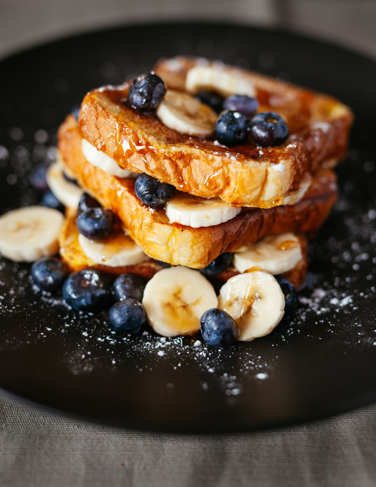

French Toast

French toast is a dish of sliced bread soaked in beaten eggs and often milk or
cream, then pan fried. French toast is served as a sweet dish, sugar, vanilla, or
cinnamon are commonly added before pan-frying and then topped with powdered sugar,
butter, fruit and syrup.
Ingredients
- ¼ cup all-purpose flour
- 1 cup milk
- 3 eggs
- 1 tablespoon white sugar
- 1 teaspoon vanilla extract
- ½ teaspoon ground cinnamon
- 1 pinch salt
- 12 thick slices of bread
Steps
-
Measure flour into a large mixing bowl. Slowly whisk in milk. Whisk in eggs,
sugar, vanilla extract, cinnamon, and salt until smooth.
- Heat a lightly oiled griddle or frying pan over medium heat.
- Soak bread slices in milk mixture until saturated.
-
Working in batches, cook bread on the preheated griddle or pan until golden brown
on each side. Serve hot.